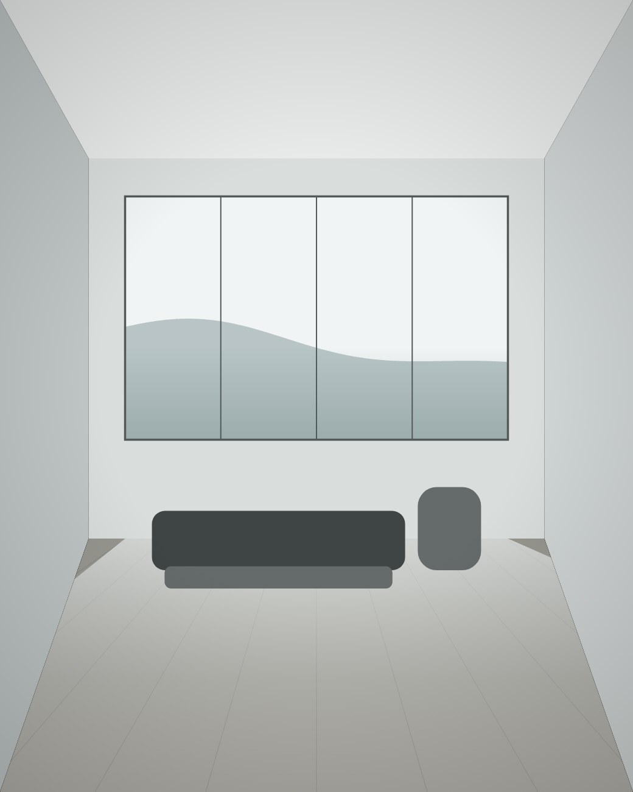
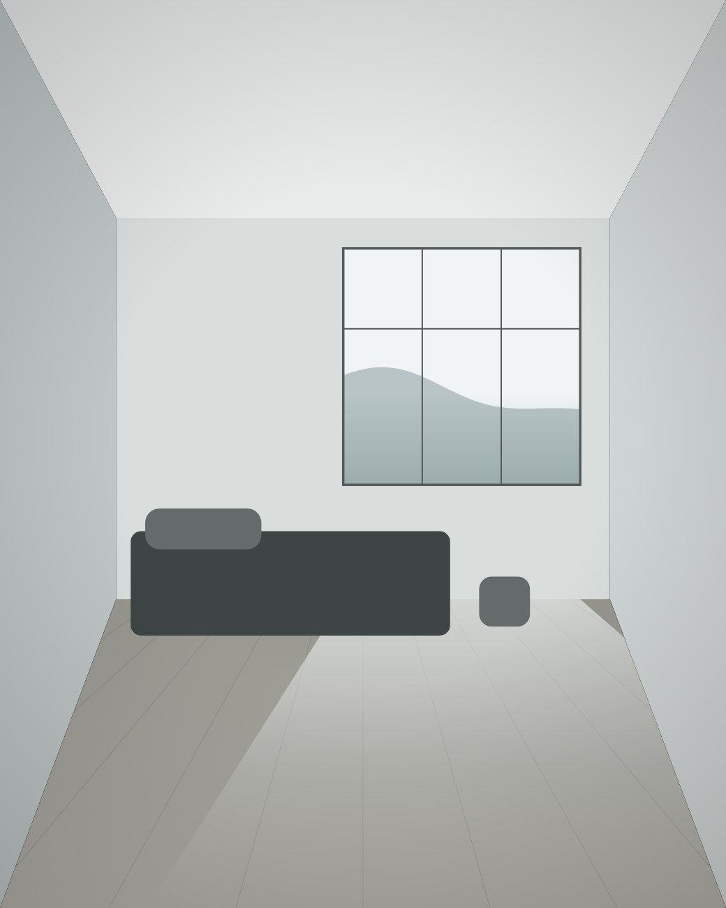
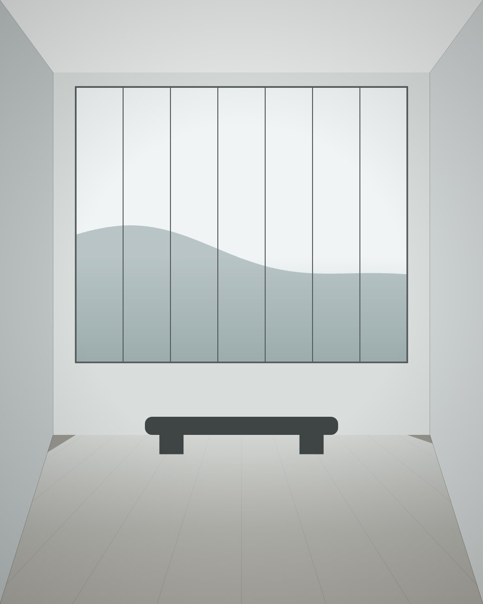

<title>翠湖苑 · 建案介紹</title>
<style>
  :root {
    --paper: #edebe4;
    --surface: #f7f6f1;
    --surface-a: rgba(247,246,241,0.82);
    --ink: #1b2e27;
    --ink-2: #5c6b63;
    --rule: #cfccc2;
    --brass: #96754a;
    --brass-2: #b99a6b;

    --font-display: "Noto Serif TC", "Songti TC", "Source Han Serif TC", Georgia, "Microsoft JhengHei", "PingFang TC", serif;
    --font-body: "PingFang TC", "Microsoft JhengHei", "Noto Sans TC", -apple-system, sans-serif;
    --font-mono: "JetBrains Mono", ui-monospace, "SFMono-Regular", Menlo, monospace;
  }

  @media (prefers-color-scheme: dark) {
    :root {
      --paper: #141a17;
      --surface: #1b231f;
      --surface-a: rgba(27,35,31,0.82);
      --ink: #e8e6dd;
      --ink-2: #9aa69f;
      --rule: #2e3833;
      --brass: #c6a473;
      --brass-2: #dcc094;
    }
  }
  :root[data-theme="dark"] {
    --paper: #141a17; --surface: #1b231f; --surface-a: rgba(27,35,31,0.82);
    --ink: #e8e6dd; --ink-2: #9aa69f; --rule: #2e3833;
    --brass: #c6a473; --brass-2: #dcc094;
  }
  :root[data-theme="light"] {
    --paper: #edebe4; --surface: #f7f6f1; --surface-a: rgba(247,246,241,0.82);
    --ink: #1b2e27; --ink-2: #5c6b63; --rule: #cfccc2;
    --brass: #96754a; --brass-2: #b99a6b;
  }

  * { box-sizing: border-box; }
  html { scroll-behavior: smooth; }
  body {
    margin: 0;
    background: var(--paper);
    color: var(--ink);
    font-family: var(--font-body);
    font-size: 15px;
    line-height: 1.75;
    -webkit-font-smoothing: antialiased;
  }
  a { color: inherit; }

  .shell { max-width: 1140px; margin: 0 auto; padding: 0 32px; }

  /* ── 頂列 ── */
  .topbar {
    position: sticky; top: 0; z-index: 20;
    background: var(--surface-a);
    backdrop-filter: blur(12px);
    border-bottom: 1px solid var(--rule);
  }
  .topbar-inner {
    max-width: 1140px; margin: 0 auto; padding: 0 32px;
    height: 62px; display: flex; align-items: center; justify-content: space-between;
  }
  .wordmark { font-family: var(--font-display); font-size: 19px; font-weight: 600; letter-spacing: 0.18em; }
  .topbar nav { display: flex; gap: 30px; }
  .topbar nav a {
    font-size: 13px; color: var(--ink-2); text-decoration: none;
    letter-spacing: 0.06em; padding: 4px 0;
    border-bottom: 1px solid transparent;
    transition: color .25s, border-color .25s;
  }
  .topbar nav a:hover, .topbar nav a:focus-visible { color: var(--ink); border-bottom-color: var(--brass); }

  /* ── 首屏 ── */
  .hero { padding: 96px 0 62px; }
  .hero-grid { display: grid; grid-template-columns: 1fr auto; gap: 56px; align-items: start; }
  .eyebrow {
    font-family: var(--font-mono);
    font-size: 11px; letter-spacing: 0.26em; text-transform: uppercase;
    color: var(--brass); margin: 0 0 26px;
  }
  .hero h1 {
    font-family: var(--font-display);
    font-size: clamp(58px, 10vw, 108px);
    font-weight: 600; margin: 0;
    letter-spacing: 0.1em; line-height: 1;
  }
  .hero .tagline {
    font-family: var(--font-display);
    font-size: clamp(19px, 2.4vw, 24px);
    margin: 26px 0 0; letter-spacing: 0.14em; color: var(--ink-2);
  }
  .hero .lead {
    margin: 34px 0 0; font-size: 15.5px; line-height: 2;
    max-width: 30em; color: var(--ink-2);
  }
  /* 直排標語：逐字堆疊，不依賴 writing-mode 的字距行為 */
  .vtag {
    display: inline-flex; flex-direction: column; align-items: center; gap: 12px;
    font-family: var(--font-display); font-size: 17px; line-height: 1;
    color: var(--ink); padding: 22px 14px; border-left: 1px solid var(--brass);
  }
  .vtag i { display: block; height: 16px; }

  .hero-meta {
    margin-top: 62px; padding-top: 22px; border-top: 1px solid var(--ink);
    display: grid; grid-template-columns: repeat(4, 1fr); gap: 24px;
  }
  .hero-meta dt {
    font-family: var(--font-mono); font-size: 10px; letter-spacing: 0.18em;
    text-transform: uppercase; color: var(--ink-2); margin-bottom: 7px;
  }
  .hero-meta dd {
    margin: 0; font-family: var(--font-display);
    font-size: 18px; letter-spacing: 0.05em;
  }

  /* ── 區塊節奏 ── */
  .band { padding: 92px 0; border-top: 1px solid var(--rule); }
  .label {
    font-family: var(--font-mono);
    font-size: 10.5px; letter-spacing: 0.22em; text-transform: uppercase;
    color: var(--brass); margin: 0 0 4px;
  }
  .band h2 {
    font-family: var(--font-display);
    font-size: 27px; font-weight: 600; letter-spacing: 0.08em; margin: 0 0 34px;
  }

  /* ── 理念 ── */
  .concept-grid { display: grid; grid-template-columns: 190px 1fr; gap: 48px; align-items: start; }
  .concept-side .rule { width: 46px; height: 1px; background: var(--brass); margin-top: 14px; }
  .concept-body p {
    font-family: var(--font-display);
    font-size: 20px; line-height: 2; margin: 0 0 22px;
    letter-spacing: 0.03em; max-width: 34em;
  }
  .concept-body p:last-child {
    font-family: var(--font-body);
    font-size: 14.5px; line-height: 1.95; color: var(--ink-2); letter-spacing: 0.02em;
  }

  /* ── 特色 ── */
  .marks { display: grid; grid-template-columns: repeat(3, 1fr); gap: 40px; }
  .mark .hair { width: 34px; height: 1px; background: var(--brass); margin-bottom: 20px; }
  .mark h3 { font-family: var(--font-display); font-size: 17px; font-weight: 600; letter-spacing: 0.06em; margin: 0 0 10px; }
  .mark p { margin: 0; font-size: 13.5px; color: var(--ink-2); line-height: 1.9; }

  /* ── 格局表 ── */
  .schedule { width: 100%; border-collapse: collapse; }
  .schedule caption { text-align: left; font-size: 12.5px; color: var(--ink-2); padding-bottom: 14px; letter-spacing: 0.02em; }
  .schedule th {
    text-align: left; font-family: var(--font-mono);
    font-size: 10.5px; letter-spacing: 0.16em; text-transform: uppercase;
    color: var(--ink-2); font-weight: 500;
    border-bottom: 1px solid var(--ink); padding: 0 14px 11px 0;
  }
  .schedule th:last-child, .schedule td:last-child { text-align: right; padding-right: 0; }
  .schedule td { padding: 18px 14px 18px 0; border-bottom: 1px solid var(--rule); font-size: 14.5px; }
  .schedule tbody tr:last-child td { border-bottom: none; }
  .schedule .unit { font-family: var(--font-display); letter-spacing: 0.04em; }
  .schedule .fig { font-family: var(--font-mono); font-variant-numeric: tabular-nums; font-size: 13.5px; }

  /* ── 生活機能：索引式點線 ── */
  .access-list { list-style: none; margin: 0; padding: 0; display: grid; grid-template-columns: 1fr 1fr; gap: 0 56px; }
  .access-list li { display: flex; align-items: baseline; gap: 12px; padding: 15px 0; border-bottom: 1px solid var(--rule); }
  .access-list .name { font-size: 14.5px; white-space: nowrap; }
  .access-list .lead { flex: 1; border-bottom: 1px dotted var(--rule); transform: translateY(-5px); margin: 0; }
  .access-list .dist { font-family: var(--font-mono); font-size: 12px; color: var(--ink-2); font-variant-numeric: tabular-nums; white-space: nowrap; }

  /* ── 頁尾 ── */
  .foot { border-top: 1px solid var(--rule); padding: 62px 0 74px; }
  .foot-grid { display: grid; grid-template-columns: 1fr auto; gap: 40px; align-items: end; }
  .foot .wordmark { display: block; margin-bottom: 16px; }
  .foot p { margin: 0 0 6px; font-size: 13.5px; color: var(--ink-2); letter-spacing: 0.02em; }
  .cta {
    display: inline-block; text-decoration: none;
    border: 1px solid var(--brass); color: var(--brass);
    padding: 13px 34px; font-size: 13px; letter-spacing: 0.14em;
    transition: background .3s, color .3s;
  }
  .cta:hover, .cta:focus-visible { background: var(--brass); color: var(--surface); }
  .disclaimer {
    margin-top: 42px; padding-top: 20px; border-top: 1px solid var(--rule);
    font-size: 11.5px; color: var(--ink-2); letter-spacing: 0.02em;
  }


  /* ── 首圖：照片版 ── */
  .hero-photo { position: relative; overflow: hidden; background: #10130f; padding: 128px 0 66px; }
  .hero-photo .hero-bg { position: absolute; inset: 0; }
  .hero-photo .hero-bg img { width: 100%; height: 100%; object-fit: cover; display: block; }
  .hero-photo .hero-scrim {
    position: absolute; inset: 0;
    background: linear-gradient(to top,
      rgba(10,13,11,0.90) 0%, rgba(10,13,11,0.66) 55%, rgba(10,13,11,0.42) 100%);
  }
  .hero-photo .shell { position: relative; z-index: 2; }
  .hero-photo .eyebrow { color: #dcbe8c; }
  .hero-photo h1 { color: #f6f4ec; }
  .hero-photo .tagline, .hero-photo .lead { color: rgba(246,244,236,0.86); }
  .hero-photo .vtag { color: #f6f4ec; border-left-color: var(--brass-2); }
  .hero-photo .hero-meta { border-top-color: rgba(246,244,236,0.46); }
  .hero-photo .hero-meta dt { color: rgba(246,244,236,0.66); }
  .hero-photo .hero-meta dd { color: #f6f4ec; }

  /* ── 內裝圖輯 ── */
  .figure { position: relative; overflow: hidden; background: var(--rule); }
  .figure img { position: absolute; inset: 0; width: 100%; height: 100%; display: block; object-fit: cover; }
  .gallery { display: grid; grid-template-columns: repeat(3, 1fr); gap: 22px; }
  .gal-item { margin: 0; }
  .gal-item .figure { aspect-ratio: 4 / 5; }
  .gal-item figcaption {
    margin-top: 13px; display: flex; justify-content: space-between; align-items: baseline;
    font-size: 12.5px; color: var(--ink-2); letter-spacing: 0.03em;
  }
  .gal-item figcaption b {
    font-family: var(--font-display); font-weight: 600; font-size: 14px;
    color: var(--ink); letter-spacing: 0.06em;
  }
  .gal-item figcaption span { font-family: var(--font-mono); font-size: 10.5px; letter-spacing: 0.12em; }
  @media (max-width: 900px) {
    .gallery { grid-template-columns: 1fr; }
    .gal-item .figure { aspect-ratio: 16 / 10; }
    .hero-photo { padding: 84px 0 50px; }
  }

  :focus-visible { outline: 2px solid var(--brass); outline-offset: 3px; }

  .reveal { opacity: 0; transform: translateY(16px); }
  @media (prefers-reduced-motion: no-preference) {
    .reveal { transition: opacity .8s ease, transform .8s ease; }
  }
  .reveal.in { opacity: 1; transform: none; }

  @media (max-width: 900px) {
    .hero-grid { grid-template-columns: 1fr; gap: 30px; }
    .vtag { flex-direction: row; border-left: none; border-top: 1px solid var(--brass); padding: 14px 0 0; }
    .vtag i { height: auto; width: 16px; }
    .hero-meta { grid-template-columns: 1fr 1fr; gap: 22px; }
    .concept-grid { grid-template-columns: 1fr; gap: 22px; }
    .marks { grid-template-columns: 1fr; gap: 34px; }
    .access-list { grid-template-columns: 1fr; }
    .topbar nav { gap: 18px; }
  }
  @media (max-width: 620px) {
    .shell, .topbar-inner { padding-left: 20px; padding-right: 20px; }
    .hero { padding: 56px 0 40px; }
    .band { padding: 62px 0; }
    .topbar nav a:nth-child(n+3) { display: none; }
    .foot-grid { grid-template-columns: 1fr; align-items: start; }
  }
</style>

<header class="topbar">
  <div class="topbar-inner">
    <span class="wordmark">翠湖苑</span>
    <nav>
      <a href="#concept">建案理念</a>
      <a href="#plans">格局配置</a>
      <a href="#gallery">內裝圖輯</a>
      <a href="#access">生活機能</a>
      <a href="#contact">聯絡我們</a>
    </nav>
  </div>
</header>

<section class="hero hero-photo">
  <div class="hero-bg"></div>
  <div class="hero-scrim"></div>
  <div class="shell">
    <div class="hero-grid">
      <div>
        <p class="eyebrow">台中 · 七期重劃區</p>
        <h1>翠湖苑</h1>
        <p class="tagline">依山面湖，日光入室</p>
        <p class="lead">一棟面湖而立的低層電梯宅。從基地座向到公共空間，以居住的尺度重新丈量。</p>
      </div>
      <div class="vtag" aria-label="風景先進來">
        <span>建</span><span>築</span><span>退</span><span>後</span>
        <i></i>
        <span>風</span><span>景</span><span>先</span><span>進</span><span>來</span>
      </div>
    </div>
    <dl class="hero-meta">
      <div><dt>基地位置</dt><dd>台中市西屯區</dd></div>
      <div><dt>規模</dt><dd>地上 7 層</dd></div>
      <div><dt>總戶數</dt><dd>180 戶</dd></div>
      <div><dt>公設比</dt><dd>28%</dd></div>
    </dl>
  </div>
</section>

<main>
  <section class="band" id="concept">
    <div class="shell">
      <div class="concept-grid">
        <div class="concept-side">
          <p class="label">Concept</p>
          <div class="rule"></div>
        </div>
        <div class="concept-body">
          <p>把湖光留在客廳，把山線留在陽台。<br />建築退後，讓風景先進來。</p>
          <p>基地南側正對翠湖，我們把主要開窗面全數轉向水岸，並將棟距拉開至 32 公尺，確保每一戶都能保有完整的湖面視野。低層規劃讓建築量體伏貼於環湖綠帶的天際線，不與環境爭高。</p>
        </div>
      </div>
    </div>
  </section>

  <section class="band">
    <div class="shell">
      <p class="label">Features</p>
      <h2>建案特色</h2>
      <div class="marks">
        <div class="mark">
          <div class="hair"></div>
          <h3>基地座向</h3>
          <p>南向面湖，北側退縮設置停車動線，主要生活空間全數避開西曬，夏季室溫可有效降低。</p>
        </div>
        <div class="mark">
          <div class="hair"></div>
          <h3>建材規格</h3>
          <p>外牆採清水模一次性澆置，對外窗使用低輻射複層玻璃，隔音與隔熱同步處理。</p>
        </div>
        <div class="mark">
          <div class="hair"></div>
          <h3>公共空間</h3>
          <p>一樓大廳挑高六米並向湖面開放，屋頂設置空中花園與健身房，公設比控制於 28%。</p>
        </div>
      </div>
    </div>
  </section>

  <section class="band" id="plans">
    <div class="shell">
      <p class="label">Floor Plans</p>
      <h2>格局配置</h2>
      <table class="schedule">
        <caption>全案共 180 戶，分 A、B 兩棟，各戶皆配置獨立陽台。</caption>
        <thead>
          <tr><th>戶型</th><th>格局</th><th>坪數</th><th>戶數</th></tr>
        </thead>
        <tbody>
          <tr><td class="unit">A 棟 · 標準二房</td><td>2 房 2 廳 1 衛</td><td class="fig">28.4 坪</td><td class="fig">40</td></tr>
          <tr><td class="unit">A 棟 · 標準三房</td><td>3 房 2 廳 2 衛</td><td class="fig">38.2 坪</td><td class="fig">60</td></tr>
          <tr><td class="unit">B 棟 · 面湖三房</td><td>3+1 房 2 廳 2 衛</td><td class="fig">45.6 坪</td><td class="fig">50</td></tr>
          <tr><td class="unit">B 棟 · 頂層四房</td><td>4 房 2 廳 3 衛</td><td class="fig">62.0 坪</td><td class="fig">30</td></tr>
        </tbody>
      </table>
    </div>
  </section>

  <section class="band" id="gallery">
    <div class="shell">
      <p class="label">Interiors</p>
      <h2>內裝圖輯</h2>
      <div class="gallery">
        <figure class="gal-item">
          <div class="figure"></div>
          <figcaption><b>客廳・面湖開窗</b><span>01</span></figcaption>
        </figure>
        <figure class="gal-item">
          <div class="figure"></div>
          <figcaption><b>主臥・側向採光</b><span>02</span></figcaption>
        </figure>
        <figure class="gal-item">
          <div class="figure"></div>
          <figcaption><b>一樓大廳・挑高六米</b><span>03</span></figcaption>
        </figure>
      </div>
    </div>
  </section>

  <section class="band" id="access">
    <div class="shell">
      <p class="label">Neighborhood</p>
      <h2>生活機能</h2>
      <ul class="access-list">
        <li><span class="name">翠湖公園</span><span class="lead"></span><span class="dist">步行 3 分</span></li>
        <li><span class="name">捷運翠湖站</span><span class="lead"></span><span class="dist">步行 5 分</span></li>
        <li><span class="name">翠湖傳統市場</span><span class="lead"></span><span class="dist">步行 6 分</span></li>
        <li><span class="name">翠湖國小</span><span class="lead"></span><span class="dist">步行 8 分</span></li>
        <li><span class="name">國泰綜合醫院</span><span class="lead"></span><span class="dist">車程 10 分</span></li>
        <li><span class="name">翠湖高中</span><span class="lead"></span><span class="dist">車程 12 分</span></li>
      </ul>
    </div>
  </section>
</main>

<footer class="foot" id="contact">
  <div class="shell">
    <div class="foot-grid">
      <div>
        <span class="wordmark">翠湖苑</span>
        <p>接待中心｜台中市西屯區翠湖路 88 號</p>
        <p>賞屋時間｜每日 10:00 – 18:00</p>
      </div>
      <a class="cta" href="#">預約賞屋</a>
    </div>
    <p class="disclaimer">本頁建案名稱、地址與聯絡資訊均為虛構，非真實銷售資訊。</p>
  </div>
</footer>

<script>
  var targets = document.querySelectorAll('.hero .shell > *, .band .shell > *, .foot-grid, .disclaimer');
  var reduce = window.matchMedia('(prefers-reduced-motion: reduce)').matches;
  if (reduce || !('IntersectionObserver' in window)) {
    targets.forEach(function (el) { el.classList.add('in'); });
  } else {
    targets.forEach(function (el) { el.classList.add('reveal'); });
    var io = new IntersectionObserver(function (entries) {
      entries.forEach(function (e) {
        if (e.isIntersecting) { e.target.classList.add('in'); io.unobserve(e.target); }
      });
    }, { rootMargin: '0px 0px -12% 0px' });
    targets.forEach(function (el) { io.observe(el); });
  }
</script>
